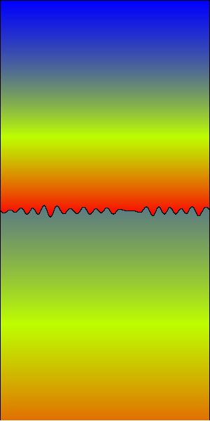
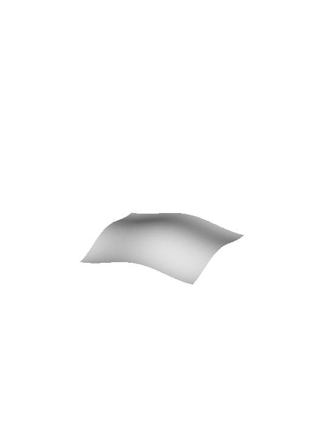
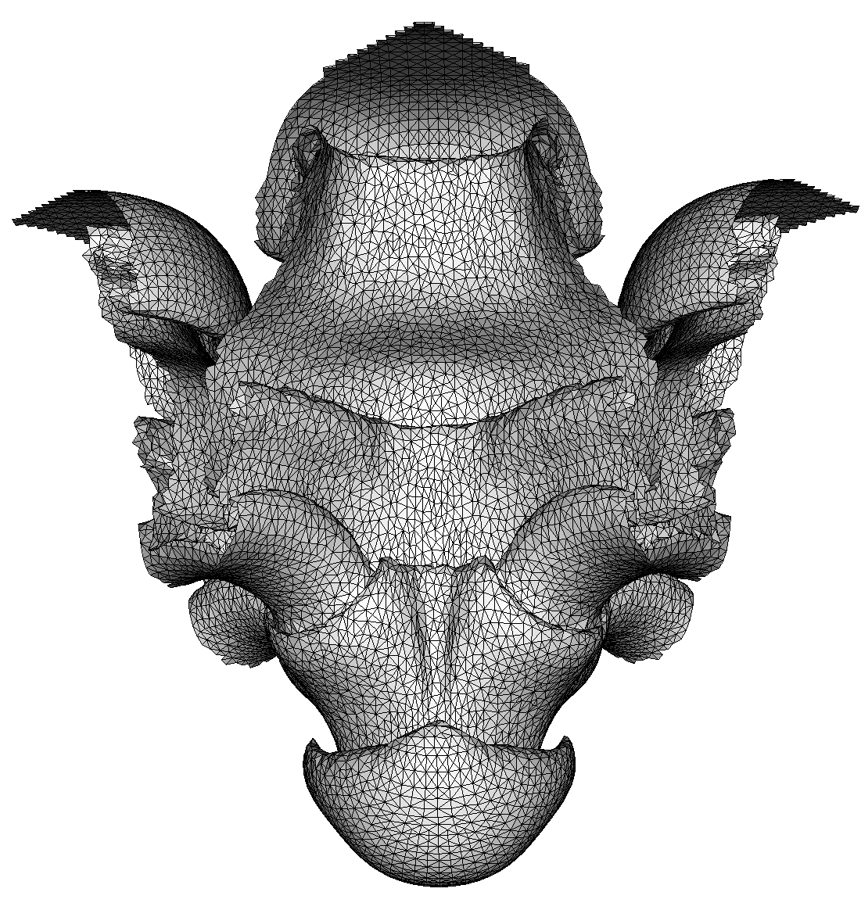

Rayleigh Taylor instability simulation in 2-dimension

Rayleigh Taylor instability simulation in 3-dimension

The numerical mesh used in simulation of RT3d
A comparison between low order numerical method (upwind) and high order numerical method (WENO) for RT2d in incompressible fluid.